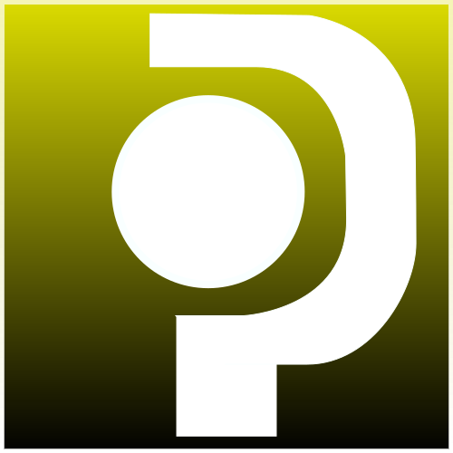
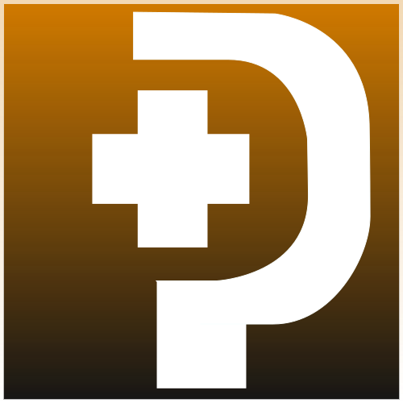

基礎知識
☆「メインクラス」と「サブクラス」
PSO2には「メインクラス」と「サブクラス」があります。
「メインクラス」とは、あなたが装備できる武器に影響するクラスです。
「サブクラス」とは、一部のスキルとステータスの影響を受けるクラスです。
以下にクラス一覧と、その装備できる武器について示します。
※ガンスラッシュはどのクラスでも使用することができます。
| アイコン | クラス名 | 略称 | 装備できる武器 |
|---|---|---|---|
 | ハンター | Hu | ソード ワイヤードランス パルチザン |
 | ファイター | Fi | ツインダガー ダブルセイバー ナックル |
 | レンジャー | Ra | ランチャー アサルトライフル -- |
| ガンナー | Gu | ツインマシンガン アサルトライフル -- | |
|  | フォース | Fo | ロッド タリス -- |
|  | テクター | Te | ウォンド タリス -- |
 | ブレイバー | Br | カタナ バレットボウ -- |
 | バウンサー | Bo | ジェットブーツ デュアルブレード -- |
| サモナー | Su | タクト -- -- | |
 | ヒーロー | Hr | ソード ツインマシンガン タリス |
 | ファントム | Ph | カタナ アサルトライフル ロッド |
「メインクラス」は、当然ですが入手した経験値の100%が加算されます。
しかし、「サブクラス」も、セットしておくだけで、サブクラスがレベル70までは、
メインクラスが獲得した経験値の25%が加算されます。
これをぜひ有効活用するためにも、必ずサブクラスをつけておきましょう。
☆ブーストアイテム
PSO2には、経験値やメセタやレアドロの確率を一時的に上昇させる、
トライブースト等の「ブーストアイテム」が多種類存在します。
経験値を稼ぐためには、ブーストを使用したほうが有利ですので、
必ず使用してクエストに行くことを忘れないようにしましょう。
同じ名前のブーストアイテムを使用しても効果は多くならないので、
違う名前のブーストを組み合わせることでより良い効果を得ることができます。
例１)トライブースト+100%と経験値+75%を使用した場合の経験値取得率の増大
100+75=175%
上記のように、ブーストアイテムの効果は加算によって求められます。
つまり、実際取得できる経験値は、元々あった100%に+175%で2.75倍になります。
☆パーティーブースト
これが最も重要になります。
PSO2では、パーティーを組むことによって「パーティーブースト」と呼ばれる、
トライブースト(メセタ、経験値、レアドロUP)が付与されます。
先ほどのブーストアイテムについての項目でお話しましたが、
ブーストアイテムの効果は加算によって求めることができます。
しかし、パーティーブーストだけは乗算でかかります。
パーティーが二人以上の場合のパーティーの人数をXとすると、
パーティーブーストは1.X倍になります。
例２)例１の場合でパーティー４人の場合の経験値取得率の増大
(100+75)×1.4=245%
つまり、実際取得できる経験値は、元々あった100%に+245%で3.45倍になります。
絶対に４人パーティーで行きましょう！
☆PSO2の日(毎月2日 +プレミアムは22日)
この日だけは、終日トライブースト+100%が標準で付きます。
この日にレベルアップクエストを全力で周回しましょう！
また、ボーナスキー東京・金ももらえますので、必ずログインしましょう！
☆プレミアムブースト
プレミアムアカウントだと、その期間は常にトラブ+50%がつきます。
また、プレミアムアカウントだとプレミアムドリンクを飲むことができ、
確定で経験値UPの効果を得られるドリンクを飲むことができます！
一応ノーマルアカウントでもランダムで出ますが、そちらは+10%で
こちらは+15%なので、地味にありがたいことであったりします。
その他多くのメリットがあるので、プレミアムアカウントをおすすめします。